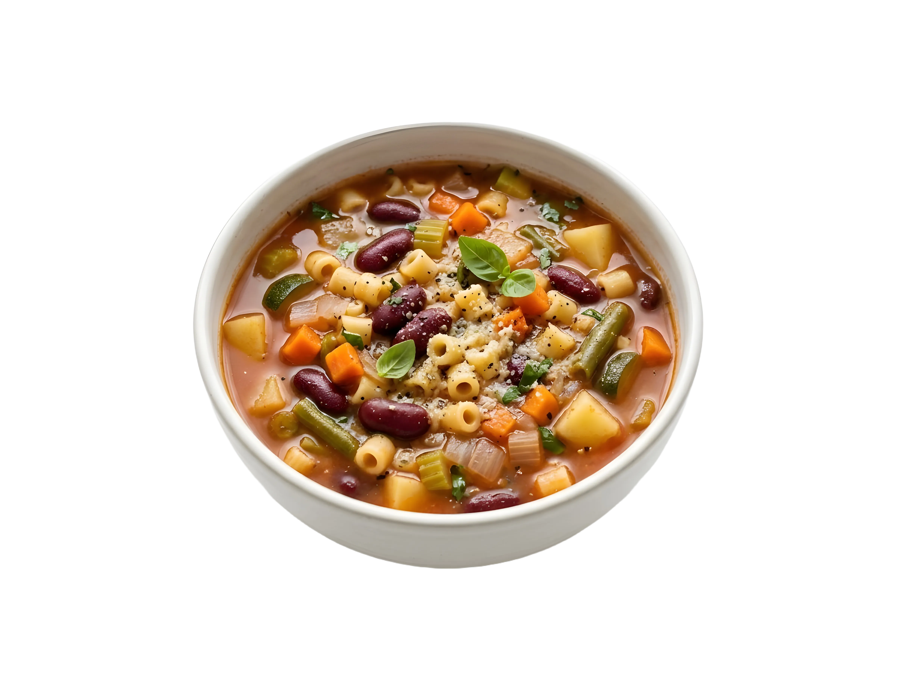

Sopa Minestrone Reconfortante
Tiempo: 35 minutos · Dificultad: Fácil · Porciones: 4

Preparación
- En una olla grande, calienta el aceite de oliva a fuego medio. Agrega la cebolla, las zanahorias y el apio. Sofríe durante 5 a 7 minutos hasta que las verduras comiencen a suavizarse.
- Añade el ajo picado, el orégano y la albahaca secos. Mezcla y cocina por 1 minuto hasta que suelten su aroma.
- Incorpora el calabacín, los tomates triturados y el caldo de verduras. Remueve bien y lleva la mezcla a ebullición.
- Reduce el fuego a medio-bajo, tapa la olla y deja cocinar a fuego lento durante 10 a 12 minutos.
- Añade la pasta corta y los frijoles blancos escurridos. Cocina destapado durante 8 a 10 minutos adicionales, o hasta que la pasta esté al dente.
- Retira del fuego y agrega las espinacas frescas picadas; el calor residual las ablandará en un par de minutos. Ajusta de sal y pimienta al gusto.
- Sirve caliente en tazones hondos, decorando con un hilo de aceite de oliva y queso parmesano recién rallado.
¡Una sopa nutritiva, reconfortante y repleta de sabor italiano!
Tips de nuestra comunidad
Descubre recetas, combinaciones y secretos compartidos por otros amantes de la cocina. ¿Tienes un secreto de cocina?
Compártelo con la comunidad.
Agrega una corteza de queso parmesano a la olla mientras la sopa se cocina a fuego lento; le dará un sabor ahumado y umami increíble al caldo.
Si vas a guardar sopa para el día siguiente, cocina la pasta por separado y agrégala al plato al momento de servir para evitar que absorba todo el caldo.